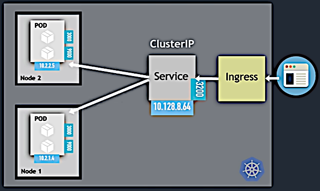
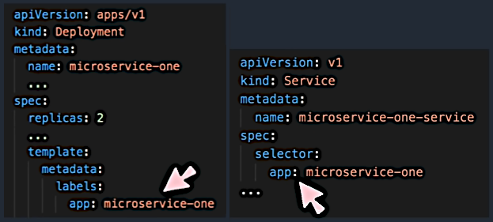
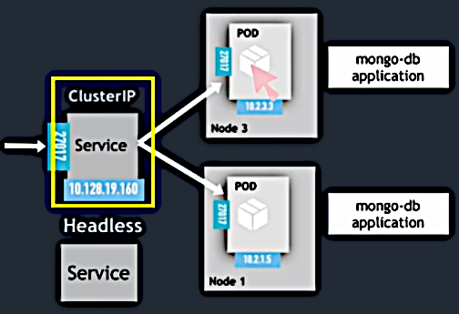
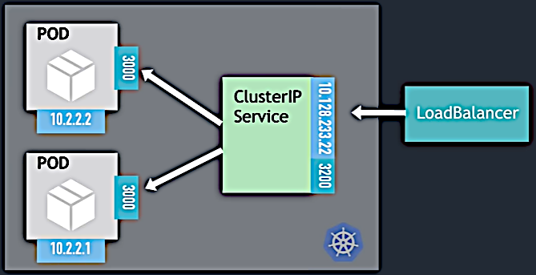

Services
Services
Services
Service types:
After a Pod recreation it obtains another IP address from the range defined for the Node. The current Pod's IP address may be found the following way:
$ kubectl get pods -o wide
NAME READY STATUS RESTARTS AGE IP NODE NOMINATED NODE READINESS GATES
mongo-express-78fcf796b8-5t7jf 1/1 Running 13 8d 172.17.0.5 minikube <none> <none>
mongodb-deployment-8f6675bc5-x2pzj 1/1 Running 5 8d 172.17.0.4 minikube <none> <none>Services provide stable IP addresses for the Pods. Also they do load balancing when a Pod is replicated. They are abstraction that provides loose coupling within and outside the cluster.
This is the default type. This is how it's used for the external access to the Pods:

The Service port 3200 is defined in the Ingress config. The replicated Pod's port is defined in
the Service config (targetPort attribute).
The Pods that the Service forwards to are defined using labels and selectors.

The label keys may be arbitrary. If there are several selectors in a Service then it'll match the Pods that have all corresponding labels.
Also K8s creates Endpoints with the same names as the corresponding Services:
$ kubectl get endpoints
NAME ENDPOINTS AGE
kubernetes 192.168.49.2:8443 11d
mongo-express 172.17.0.5:8080 8d
mongo-express-service 172.17.0.5:8081 8d
mongodb-service 172.17.0.4:27017 8dEndpoints keep track of which Pods are members/endpoints of the Service. When the Pod is recreated the above information is updated.
In the Service config the port parameter may be chosen arbitrarily but the targetPort must
match the port that's listened by the Pod.
A Service may have several ports (port—targetPort pairs). In this case the ports must be
named.
A client may want to communicate directly to a specific replica of a Pod. This may be needed to request a stateful Pod (like a database) when Pod replicas are not identical. The master Node (see here) is the only allowed for writing. When another Pod is added it need to connect to the specific Pod for synchronization.
The first option to achieve this is using K8s specific API but this is inefficient.

The other option is using DNS Lookups for Service that returns a single IP address
(ClusterIP). In Service config we set parameter spec/clusterIP to None. Then the DNS server
will return the Pod IP address instead of the Service IP address.
In this case we adjust two Services. One for the usual use, and the other headless Service for synchronization.
Service with type: NodePort is accessible on a static port on each worker Node in a cluster.
This type of Services have additional attribute nodePort in configuration file. The range
is 30000..32767.
This option may cause security issues. May be used for testing purpose.
This approach uses the cloud provider load balancer.

When we create a Service with type: LoadBalancer the NodePort and ClusterIP Services are
created automatically.
Jul 14, 2021
This is the end!